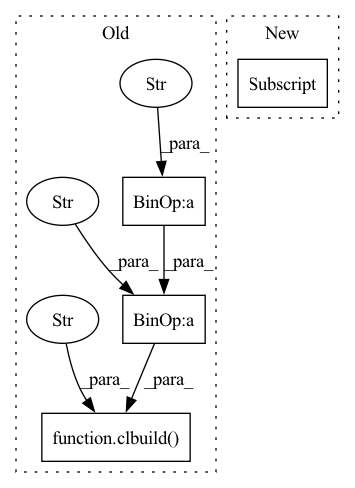

Pattern ID :25007

Before Change
elif op == BinaryOps.CMPEQ: code = "(float4)(1.0f*(a.x==b.x), 1.0f*(a.y==b.y), 1.0f*(a.z==b.z), 1.0f*(a.w==b.w))"
else: raise Exception(f"{op} isn"t supported")
assert x.shape == ret.shape and y.shape == ret.shape
binop = clbuild("binop",
__kernel void binop(__global const float4 *a_g, __global const float4 *b_g, __global float4 *res_g) {
int gid = get_global_id(0);
float4 a = a_g[gid];
float4 b = b_g[gid];
res_g[gid] = +code+;
})
binop([roundup(prod(ret.shape))//4], None, x.cl, y.cl, ret.cl)
return ret
def reduce_op(op, inp, new_shape):
After Change
int gid = get_global_id(0);
float4 A = a_g[gid];
float4 B = b_g[gid];
res_g[gid] = convert_float4(+code_for_op[op]+);
})
binop([roundup(prod(ret.shape))//4], None, x.cl, y.cl, ret.cl)
return ret
In pattern: SUPERPATTERN
Frequency: 3
Non-data size: 4
Instances
Fragment ID: 76846548
Project Name: geohot/tinygrad
Commit Name: 395eb60f46be61235004498875cc849bdfac2d28
Time: 2022-06-18
Author: geohot@gmail.com
File Name: tinygrad/llops/ops_gpu.py
M Class Name: AnonimousClass
N Class Name: AnonimousClass
M Method Name: binary_op(3)
N Method Name: binary_op(3)
M Parent Class:
N Parent Class:
M File Name: tinygrad/llops/ops_gpu.py
N File Name: tinygrad/llops/ops_gpu.py
M Start Line: 78
M End Line: 92
N Start Line: 78
N End Line: 84
'>
Before Change
else: raise Exception(f"{op} isn"t supported")
// TODO: this is insanely slow
// NOTE: ret.shape can be (1,), it"s mostly by luck that this works
reduce = clbuild("reduce",
__kernel void reduce(__global const float *a_g, int sz, __global float *res_g, int prod, int n_dims,
__global const int *shape_x, __global const int *shape_ret) {
int gid = get_global_id(0);
float out = +start+;
for (int x = 0; x < sz; x++) {
int idx = 0; // compute index into a_g
int tprod = prod;
int tsz = sz;
for (int dim = 0; dim < n_dims; dim++) {
idx *= shape_x[dim];
if (shape_x[dim] == shape_ret[dim]) { // dim from gid, don"t reduce
tprod /= shape_x[dim];
idx += (gid / tprod) % shape_x[dim];
} else { // dim from x
tsz /= shape_x[dim];
idx += (x / tsz) % shape_x[dim];
}
}
float a = a_g[idx];
+code+;
}
res_g[gid] = out;
})
reduce([prod(ret.shape)], None, inp.cl,
i32(prod(inp.shape)//prod(ret.shape)), ret.cl,
i32(prod(ret.shape)), i32(len(ret.shape)),
buffer_np(np.array(inp.shape, dtype=np.int32)),
After Change
acc = 1
loop_start, loop_end = [], []
for i,o in list(zip(inp.shape, ret.shape))[::-1]:
if i != o: // reduce axis
assert o == 1
loop_start.append(f"for (int axis_{len(loop_start)} = 0; axis_{len(loop_start)} < {i}; axis_{len(loop_start)}++) {{")
'>
Fragment ID: 76846549
Project Name: geohot/tinygrad
Commit Name: 906cce9916cb43ed6d28c2d950fb17420dd60085
Time: 2022-06-14
Author: george@comma.ai
File Name: tinygrad/llops/ops_gpu.py
M Class Name: AnonimousClass
N Class Name: AnonimousClass
M Method Name: reduce_op(3)
N Method Name: reduce_op(3)
M Parent Class:
N Parent Class:
M File Name: tinygrad/llops/ops_gpu.py
N File Name: tinygrad/llops/ops_gpu.py
M Start Line: 95
M End Line: 124
N Start Line: 96
N End Line: 117
'>
Before Change
elif op == UnaryOps.NEG: code = "-a"
elif op == UnaryOps.SIGN: code = "sign(a)"
else: raise Exception(f"{op} isn"t supported")
unop = clbuild("unop",
__kernel void unop(__global const float4 *a_g, __global float4 *res_g) {
int gid = get_global_id(0);
float4 a = a_g[gid];
res_g[gid] = +code+;
})
unop([roundup(prod(ret.shape))//4], None, x.cl, ret.cl)
return ret
def binary_op(op, x, y):
After Change
__kernel void unop(__global const float4 *a_g, __global float4 *res_g) {
int gid = get_global_id(0);
float4 A = a_g[gid];
res_g[gid] = convert_float4(+code_for_op[op]+);
})
unop([roundup(prod(ret.shape))//4], None, x.cl, ret.cl)
return ret
'>
Fragment ID: 76846558
Project Name: geohot/tinygrad
Commit Name: 395eb60f46be61235004498875cc849bdfac2d28
Time: 2022-06-18
Author: geohot@gmail.com
File Name: tinygrad/llops/ops_gpu.py
M Class Name: AnonimousClass
N Class Name: AnonimousClass
M Method Name: unary_op(2)
N Method Name: unary_op(2)
M Parent Class:
N Parent Class:
M File Name: tinygrad/llops/ops_gpu.py
N File Name: tinygrad/llops/ops_gpu.py
M Start Line: 61
M End Line: 72
N Start Line: 66
N End Line: 71